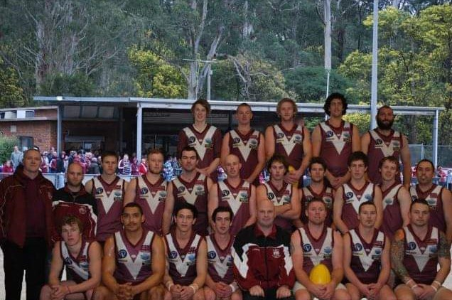

A Brief History
I finished year 12 way back in 2002 at Lilydale high school. Loved sport all through school and I really enjoyed computers. Had a few different computer courses in high school but never knew exactly what I wanted to do growing up. I had a fair few odd jobs including basketball referee, pre apprentice baker, paper round, KFC and so on. Until I fell into a plastering apprenticeship in 2003 and never looked back. Finished my apprenticeship early in 2006 and started subcontracting. Ended up starting my own business around 6 years ago and have had up to 12 employees at any one time.
So currently married with 5 kids as you would imagine I like to keep busy. I go to gym almost every morning around 4.45am as thats my own time and cant be disturbed. I play local footy for Mount Evelyn where im also an assitant coach. I love going to concerts (when I can) and I really enjoy the metal scene as well as punk. A lot of my energy is taken up with kids social lifes. They seem to have a birthday party every week! Im really into smoking meats at the moment given all the lockdowns. Anything from briskets to ribs and the BBQ is always on at my place.
I used to really love getting into computers, especially gaming, however life kinda got in the way. You never stop learning and IT will be a new passionate skill im eager to learn. Still love getting out the old consoles like the N64 and showing the kids what all the old games used to be like.
Below are some links to some of the various tests you can do online for learning styles, Personality tests and a creativity test. All of which can be done for free online. They're here to give you a little more of an in depth look to what i'm like as a person and some of my attributes. I reccomend everybody have a go at one!
The results of the personaility test really shows that I'm an entertainer and guess would enjoy the center of attention all the time. Although not entirely true, it is pretty accurate. I do enjoy being myself and being loud without bothering to much what people think, but its defintitely not all the time.
The learning style quiz was a little up and down in its results. most of the questions were clear cut, however there was quite a few that could have had a few different answers which could have drastically altered the outcome. So I think overall its close in its results, but it could have been a lot different if I had have changed a few of those 50 50 answers.
The creativity test I wasnt totally sure about the results. It ended up basically being around average on everything. Some of the questions I didnt quite understand but I guess thats the point to show your creativity. So based on the results I can only say that average across the board does sound about right. Im not really to far out there with some of my ideas, but have the ability to think outside the box when I need to.